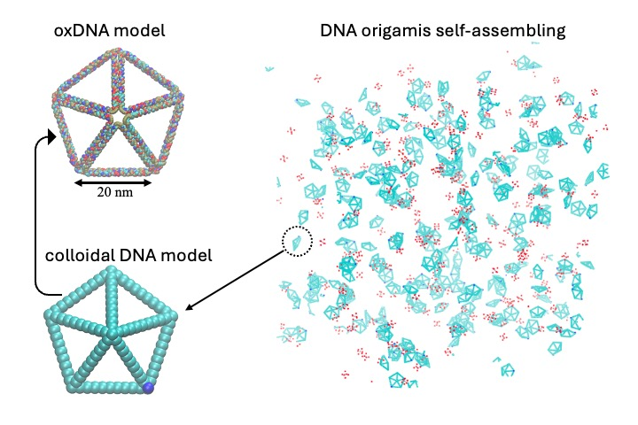
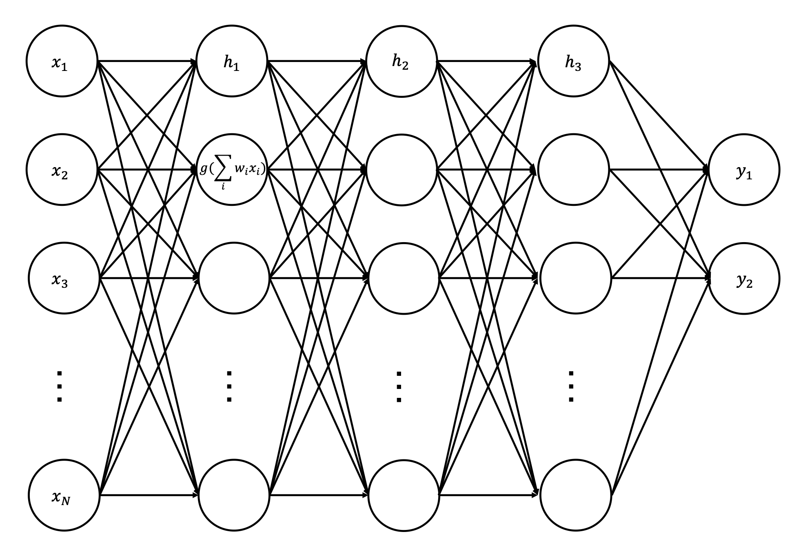

Welcome to Our Lab
My lab aims at using computational and theoretical methods to develop new materials for applications in energy management, mass transport, information processing, and human health. My research area includes thermodynamics, transport process, polymer structure-property relationship, interfacial physical chemistry, and nanotechnology. My team will develop multi-scale simulation models, machine learning/artificial intelligence (ML/AI) models, and theoretical methods to accelerate materials design. We will use High Performance Computers (HPCs) to help experimentalists solve materal develop problems. Through rigorous computation and interdisciplinary collaboration, my lab will have a broad impact in thermal physics, materials science, computational chemistry, physical chemistry, and data science.
Research Areas
Thermodynamics

Understand energy, temperature, entropy, and phase/state at molecular level and macroscopic scale.
Multi-scale simulation
Develop computational methods, from ab initio to classical molecular dynamics (MD), then coarse-grained (CG) simulations and Monte Carlo (MC) methods, and finally hydrodynamic models.
ML/AI models
Integrate low-fidelity simulation dataset with high-fidelity experimental dataset to train ML/AI models. Apply physical rules to refine and build more realistic and more generalizable ML/AI models.
Recent Publications
Google ScholarResearch Gate
- "Structure and Zeta Potential of Gold Nanoparticles with Coronas of Varying Size and Composition." The Journal of Physical Chemistry C (2025).
- "Molecular Electronic Junctions Achieved High Thermal Switch Ratios in Atomistic Simulations." ACS Applied Materials & Interfaces (2024).
- "Binding Site Programmable Self-Assembly of 3D Hierarchical DNA Origami Nanostructures." The Journal of Physical Chemistry A (2024).
Our Team

Dr. Xingfei Wei
Principal Investigator
Contact Us
Xingfei Wei, Postdoctoral Schoolar
Department of Chemistry
Johns Hopkins University
Baltimore, MD 21218
Email: xwei20@jhu.edu